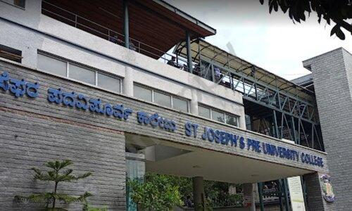
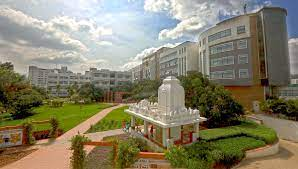

Education
From panicking to polish my shoes to sleeping through lectures. From revising a week before exams to pulling an all-nighter to complete a semesters syllabus. Who I am and what I am, These are the instituitions that shaped me into becoming the person I am.

Schooling
Sree Cauvery School
I've completed 10 years at Sree cauvery school. Located at indiranagar Bangalore.Competed in various co-curicular activities. Scored 91.52% in my matriculate final exam
Pre-University
St. Joseph's PU College

St.Jospeh's PU college is more than an educational instituition I'd prefer to call it an experience. As a student it instilled in me principles that hes help grow as an individual. To take care of one-self and the society is what sjpuc preaches. Scored 91% in my final PU exam.
Engineering
New Horizon College Of Engineering

I've completed my bachelors in Electronics and communciations. Competed in various events and held leadership positions. I have been the club president for Electronics Hobby Club. I've also held the position of Campus ambassador for Cisco. CGPA: 9.48